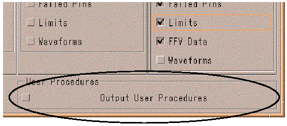

User procedure settings
The Output User Procedure checkbox enables or disables inclusion of user procedure data in the output of the Event Formatter.

If the option is enabled, the output will be included like shown below:
========== Started Userprocedure up_test1 ====================== ---------- Userprocedure Output: ------------------------------- ========== Ended Userprocedure up_test1 ========================
The actual output of the user procedure is included below the Userprocedure
Output: separator. For information on user procedure output, see UserProcedureEventType.
Functional changes
- Introduced before SmarTest 6.3.2